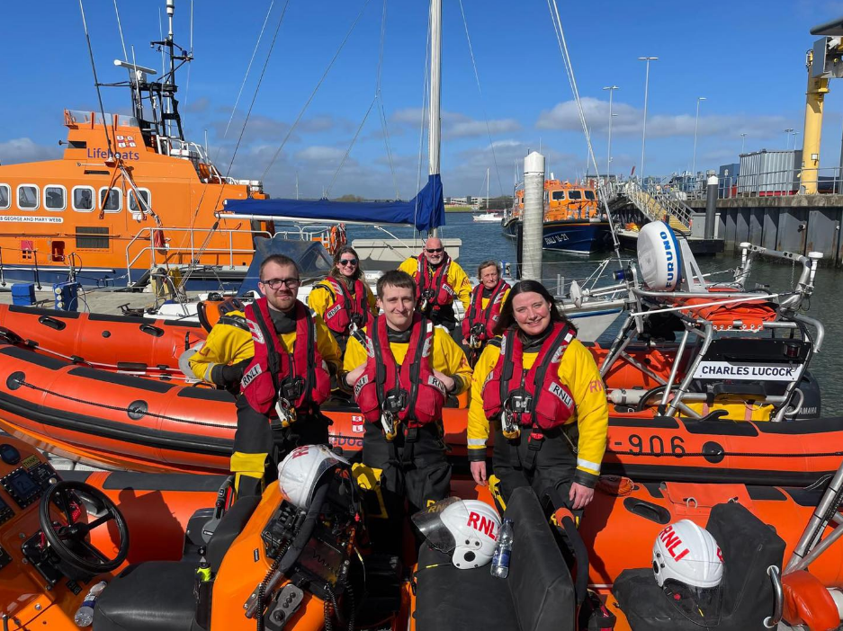
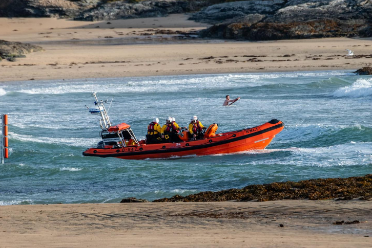

12 Hour Diveathon
We are proud to announce our upcoming "Twelve Hour Diveathon" fundraiser - where at least two divers will remain in the water for 12 hours straight, raising vital funds for Trearddur Bay RNLI Station.


This is believed to be the first event of its kind attempted in fully open water in the UK. Having existed for over 50 years, Trearddur Bay Lifeboat Station is a pillar of the local community, saving dozens of lives every year. The RNLI receive no government funding — they are kept afloat purely by donations.
The event, happening on the 9th of May, will run from 9AM to 9PM. During this time, 24 divers will be underwater photographing wildlife, picking litter, and completing training modules.
Support our Diveathon
Our club is very appreciative of the work the RNLI do to protect those using the water. In a statement, LUSAC President Kira D'Arcy said "It is incredibly reassuring to know that such an incredible service would be available to us if we ever need it. Whilst as a club we endeavour to dive safely by completing in depth risk assessments, unfortunately sometimes even the most stringent planning cannot prevent an incident. The work of the RNLI is truly vital and we want to support them in whatever way possible."